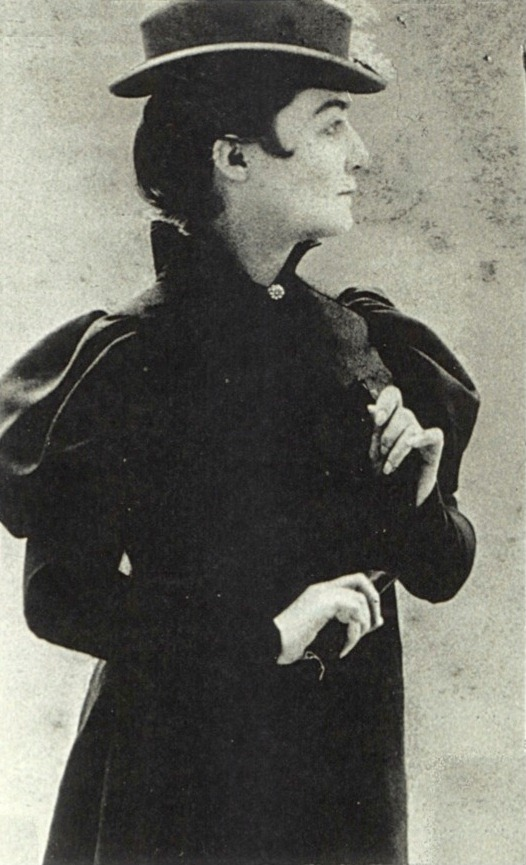

Rachilde was the pen name and preffered name of Marguerite Vallette-Eymery (11 February 1860 – 4 April 1953). She was a novelist and playwright born near the city of Périgueux, France. She was born with one leg being shorter than the other, giving her a life long limp. She was unloved and not wanted by her parents. The family's pet monkey recieved more loved than she did, such as the monkey being allowed a seat at the dinner table while she was not.
She was married to man but her life was not typical of that of a wife. She wore mens clothes, smoke, drank, and cussed like a man. She would discribe herself as androgynous, she neither man or woman.
One of her idols was Victor Hugo, and his inspratation can be seen in her work. Spreaking of which, her work was noted for being frank, fantastical, and always with a them on questioning the world's stance ongender, sexuality, and identity.